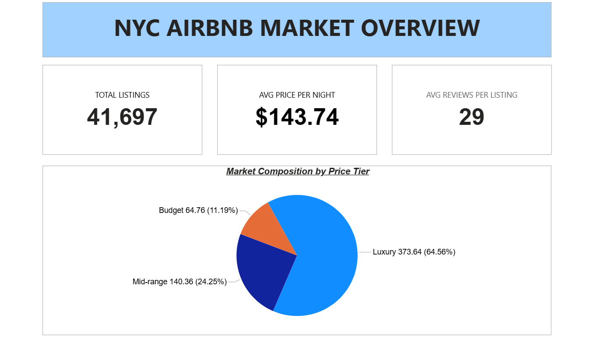

All Projects

AQI Prediction System
View CodeWeb-based Air Quality Index classification system built with machine learning and real-world air pollution data to predict AQI severity from atmospheric pollutant inputs.
- Trained Gaussian Naive Bayes classifier to predict Air Quality Index across 6 severity categories
- Applied information gain analysis to rank feature importance of 4 pollutants (PM2.5, O₃, NO₂, CO)
- Built multi-page interface with real-time prediction, feature analysis, and history tracking

Stock Price Analytics Pipeline
View CodeEnd-to-end analytics pipeline transforming raw stock market data into optimized dimensional models using the medallion architecture pattern for analytics performance.
 Databricks
PySpark
Databricks
PySpark
 Snowflake
Snowflake
 Power BI
Power BI
- Built Bronze → Silver → Gold transformations using Delta Live Tables
- Implemented fact and dimension tables for analytics optimization
- Loaded curated data into Snowflake for BI reporting

Azure Spotify Data Pipeline
View CodeCloud-native incremental data pipeline leveraging Azure services and Databricks for efficient large-scale data processing with quality enforcement.
Databricks
- Designed watermark-based incremental ingestion from Azure SQL
- Processed data using PySpark and Auto Loader for automation
- Implemented star schema modeling with data quality expectations

Airbnb NYC Analytics Dashboard
View CodeInteractive analytics dashboard analyzing 41,697 NYC Airbnb listings with multi-dimensional insights using cloud data warehouse and business intelligence tools.
Snowflake
Power BI
SQL
- Loaded 41,697 listings into Snowflake cloud data warehouse
- Created 8+ visualizations tracking market metrics across neighborhoods and room types
- Implemented interactive filters for stakeholder drill-down analysis